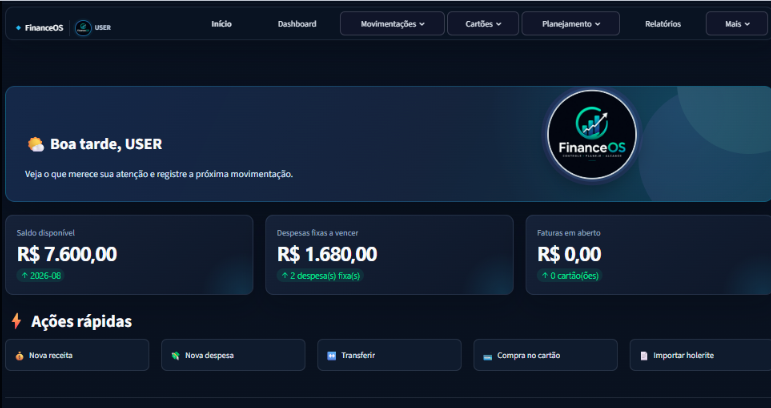
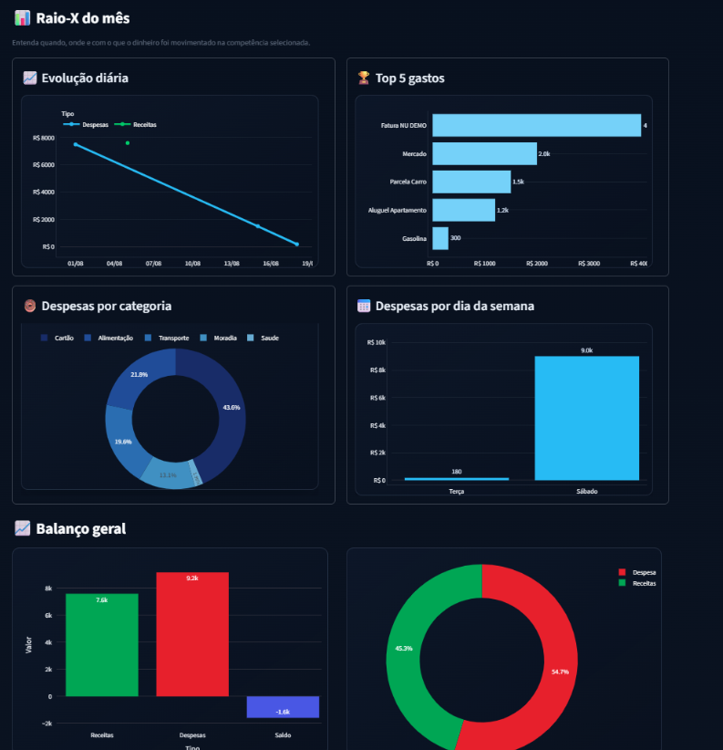
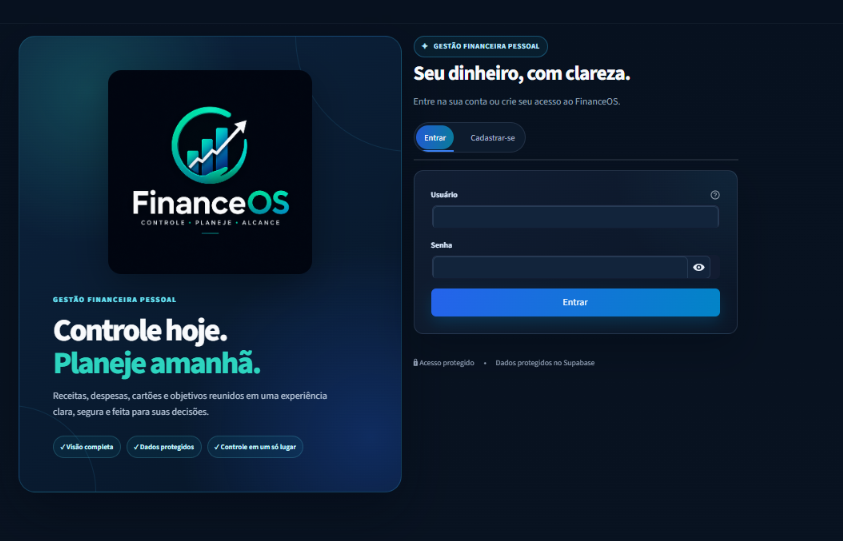

01
FinanceOS
Plataforma web de gestão financeira pessoal com autenticação própria, isolamento de dados por usuário e arquitetura híbrida SQLite/PostgreSQL. Possui dashboards interativos, gestão de cartões e faturas, conciliação bancária e importação de documentos com OCR. Segurança com PBKDF2-HMAC-SHA256, Row Level Security (RLS), controle de sessões e verificações automatizadas com CodeQL e Dependabot.
Python
Streamlit
PostgreSQL
Supabase
Cloudflare
Docker


